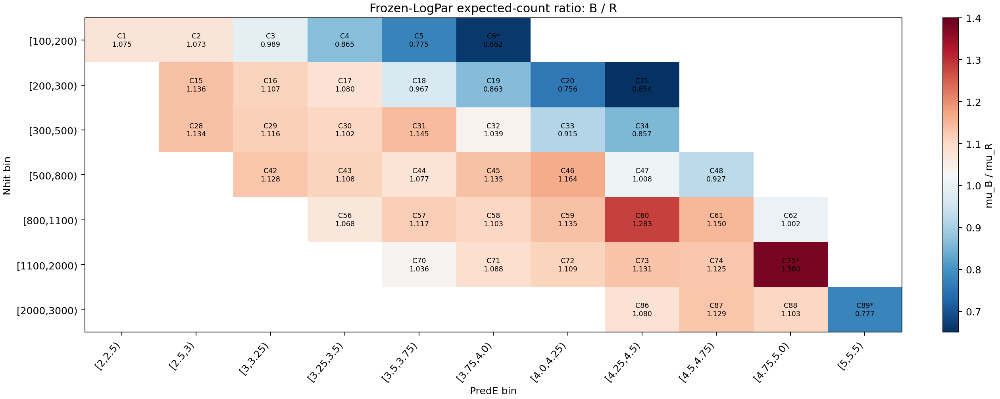
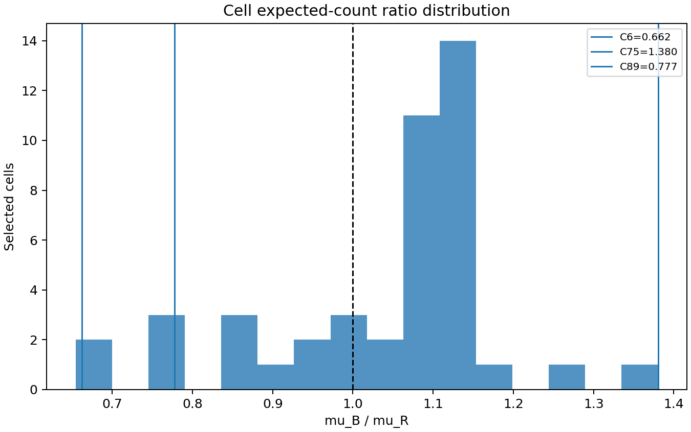
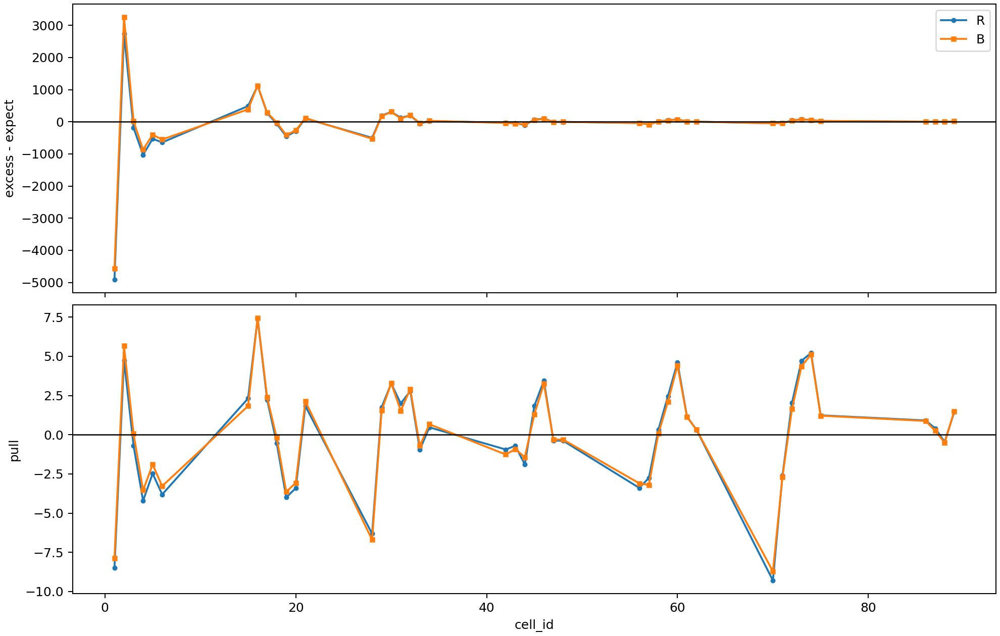
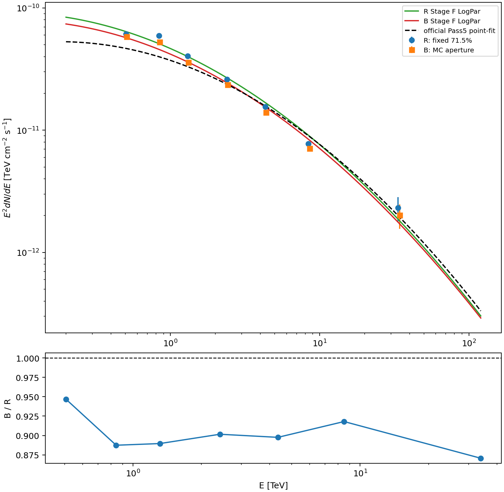
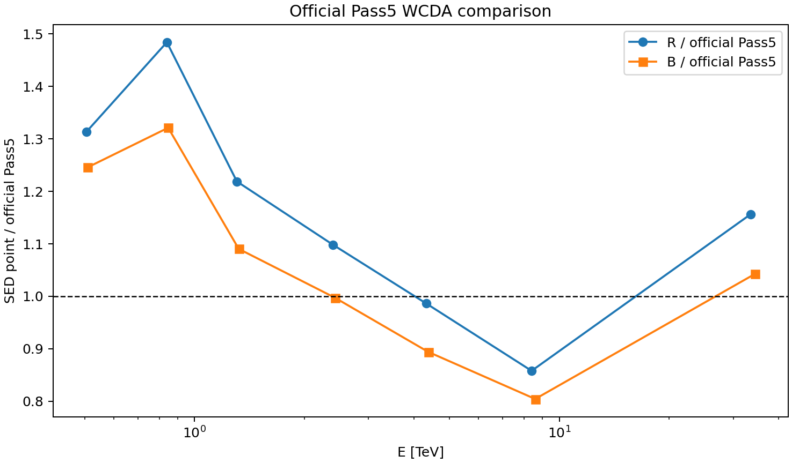
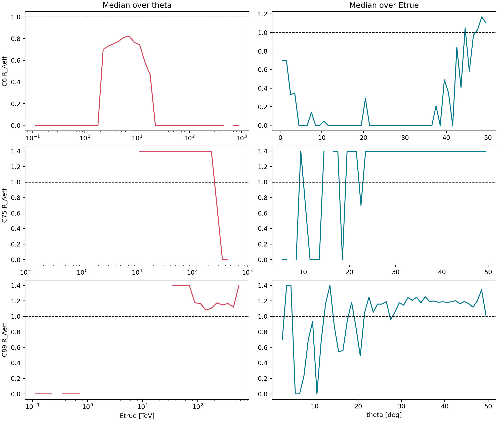

v6 PSF Containment Compare:
Fixed 71.5% Rayleigh vs MC Aperture-conditioned Response
Run v6_64748_nhit100_reselect44_split56_miss030; recomputation Slurm job 65129; finalize Slurm job 65132; git commit at execution 40ae7b437b5870ea035fbf0c7581a487dac117c1.
1. Executive summary
Frozen-spectrum cell expectation B/R spans 0.6543 to 1.3804, median 1.0842. The spread directly tests energy/cell dependence rather than allowing the spectrum to absorb it.
2. Strict scheme definitions
R: Aeff_R(cell,Etrue,theta) = 0.715 Aeff_nominal. For a two-dimensional Gaussian PSF, r_opt approximately 1.585 sigma gives Rayleigh containment approximately 71.5%.
B: response numerator is cut at mc_dangle <= r_opt(cell), so Aeff_B=Aeff_aperture and downstream containment is exactly 1.0. No second factor of 0.715 is applied.
3. Inputs and reproducibility
Config: /mnt/mydisk/server/projects/energy_reconstruction/apply/config/v6_psf_containment_compare.json. Selector is frozen at 44 cells; C75 is included and C90 excluded. Both schemes use the same Stage E N_on, B_on, excess, and conservative sqrt(N_on+B_on) error.
- Nominal response:
apply/output/stage_a_v6_64748_nhit100_highEplus1_split56/response_2d_v6_64748_nhit100_highEplus1_split56.npz - Aperture response:
apply/output/stage_a_v6_64748_nhit100_reselect44_split56_miss030_aperture_conditioned/response_2d_v6_64748_nhit100_reselect44_split56_miss030_aperture_conditioned.npz - Stage E signal:
apply/output/stage_e_v6_64748_nhit100_reselect44_split56_miss030_containment1_annnorm/runs/v6_64748_nhit100_reselect44_split56_miss030_stage_e_containment1_annnorm/signal_v6_64748_nhit100_reselect44_split56_miss030_containment1_annnorm.npz - Selector:
apply/config/cell_selector_v6_64748_nhit100_reselect44_split56_miss030_fit.csv
4. Response metadata consistency


5. Cell-by-cell expect ratio
| cell | Nhit | PredE | mu_R | mu_B | B/R | B-R | MC Neff |
|---|---|---|---|---|---|---|---|
| 1 | [100,200) | [2,2.5) | 6318.36 | 6789.85 | 1.07462 | 471.489 | 316189 |
| 2 | [100,200) | [2.5,3) | 11178.6 | 12000.1 | 1.07349 | 821.475 | 529415 |
| 3 | [100,200) | [3,3.25) | 1707.43 | 1687.88 | 0.988553 | -19.5446 | 108381 |
| 4 | [100,200) | [3.25,3.5) | 681.34 | 589.019 | 0.864501 | -92.3208 | 48735.6 |
| 5 | [100,200) | [3.5,3.75) | 384.886 | 298.467 | 0.775467 | -86.4196 | 27906.2 |
| 6 | [100,200) | [3.75,4.0) | 210.326 | 139.284 | 0.662229 | -71.042 | 17459.9 |
| 15 | [200,300) | [2.5,3) | 5716.38 | 6493.59 | 1.13596 | 777.204 | 224414 |
| 16 | [200,300) | [3,3.25) | 2568.16 | 2844 | 1.10741 | 275.844 | 132577 |
| 17 | [200,300) | [3.25,3.5) | 793.906 | 857.433 | 1.08002 | 63.5273 | 60558.9 |
| 18 | [200,300) | [3.5,3.75) | 308.771 | 298.484 | 0.966682 | -10.2875 | 26588.7 |
| 19 | [200,300) | [3.75,4.0) | 181.02 | 156.198 | 0.862879 | -24.8216 | 16637.2 |
| 20 | [200,300) | [4.0,4.25) | 90.9894 | 68.7783 | 0.755894 | -22.2111 | 12238.6 |
| 21 | [200,300) | [4.25,4.5) | 39.5187 | 25.8559 | 0.654269 | -13.6628 | 9156.26 |
| 28 | [300,500) | [2.5,3) | 1733.83 | 1965.68 | 1.13372 | 231.854 | 57924.5 |
| 29 | [300,500) | [3,3.25) | 3446.46 | 3845.51 | 1.11578 | 399.046 | 138618 |
| 30 | [300,500) | [3.25,3.5) | 2286.75 | 2519.66 | 1.10185 | 232.913 | 128146 |
| 31 | [300,500) | [3.5,3.75) | 602.936 | 690.122 | 1.1446 | 87.1864 | 54018.2 |
| 32 | [300,500) | [3.75,4.0) | 182.685 | 189.892 | 1.03945 | 7.20733 | 21220.9 |
| 33 | [300,500) | [4.0,4.25) | 91.6411 | 83.8796 | 0.915306 | -7.76147 | 14290.9 |
| 34 | [300,500) | [4.25,4.5) | 41.2559 | 35.3546 | 0.856958 | -5.90131 | 11230.2 |
| 42 | [500,800) | [3,3.25) | 460.752 | 519.846 | 1.12826 | 59.0939 | 15877.9 |
| 43 | [500,800) | [3.25,3.5) | 1610.15 | 1784.64 | 1.10837 | 174.49 | 68584.6 |
| 44 | [500,800) | [3.5,3.75) | 1418.02 | 1527.7 | 1.07735 | 109.682 | 82822.8 |
| 45 | [500,800) | [3.75,4.0) | 408.396 | 463.633 | 1.13525 | 55.2371 | 37937.9 |
| 46 | [500,800) | [4.0,4.25) | 70.7994 | 82.4456 | 1.1645 | 11.6462 | 12423.1 |
| 47 | [500,800) | [4.25,4.5) | 21.6801 | 21.8633 | 1.00845 | 0.183166 | 6444.41 |
| 48 | [500,800) | [4.5,4.75) | 9.0319 | 8.37589 | 0.927368 | -0.656006 | 5361.21 |
| 56 | [800,1100) | [3.25,3.5) | 124.376 | 132.789 | 1.06764 | 8.41263 | 4939.22 |
| 57 | [800,1100) | [3.5,3.75) | 473 | 528.516 | 1.11737 | 55.5154 | 23688.1 |
| 58 | [800,1100) | [3.75,4.0) | 472.718 | 521.642 | 1.10349 | 48.9233 | 32423.5 |
| 59 | [800,1100) | [4.0,4.25) | 126.447 | 143.508 | 1.13493 | 17.0616 | 15457.8 |
| 60 | [800,1100) | [4.25,4.5) | 14.7422 | 18.9087 | 1.28262 | 4.16644 | 4346.75 |
| 61 | [800,1100) | [4.5,4.75) | 2.37687 | 2.7325 | 1.14962 | 0.355624 | 1583.65 |
| 62 | [800,1100) | [4.75,5.0) | 0.702937 | 0.704213 | 1.00181 | 0.00127576 | 1242.38 |
| 70 | [1100,2000) | [3.5,3.75) | 61.6628 | 63.9044 | 1.03635 | 2.24159 | 3060.56 |
| 71 | [1100,2000) | [3.75,4.0) | 238.589 | 259.699 | 1.08848 | 21.1103 | 15085.5 |
| 72 | [1100,2000) | [4.0,4.25) | 258.357 | 286.631 | 1.10944 | 28.2746 | 27731.2 |
| 73 | [1100,2000) | [4.25,4.5) | 94.2285 | 106.535 | 1.13061 | 12.307 | 20073.6 |
| 74 | [1100,2000) | [4.5,4.75) | 17.0312 | 19.1653 | 1.1253 | 2.13409 | 7480.25 |
| 75 | [1100,2000) | [4.75,5.0) | 1.59903 | 2.20723 | 1.38035 | 0.6082 | 2025.17 |
| 86 | [2000,3000) | [4.25,4.5) | 9.98675 | 10.7858 | 1.08001 | 0.799019 | 2041.1 |
| 87 | [2000,3000) | [4.5,4.75) | 10.3842 | 11.721 | 1.12874 | 1.33682 | 4791.1 |
| 88 | [2000,3000) | [4.75,5.0) | 6.02603 | 6.64513 | 1.10274 | 0.619106 | 5776.86 |
| 89 | [2000,3000) | [5,5.5) | 1.57374 | 1.22354 | 0.777475 | -0.350197 | 3812.21 |
6. Stage F global fit comparison
| scheme | model | phi0 | gamma | alpha | beta | chi2 | ndof | chi2/ndof | p-value |
|---|---|---|---|---|---|---|---|---|---|
| R | pl | 2.32232e-12 | 2.66325 | 607.5 | 42 | 14.4643 | 2.38094e-101 | ||
| B | pl | 2.12485e-12 | 2.65624 | 575.719 | 42 | 13.7076 | 6.49959e-95 | ||
| R | logpar | 2.51504e-12 | 2.77443 | 0.107199 | 516.214 | 41 | 12.5906 | 1.72438e-83 | |
| B | logpar | 2.29793e-12 | 2.76065 | 0.107148 | 480.515 | 41 | 11.7199 | 2.42289e-76 |
Parameter changes (B - R)
| model | parameter | R | R error | B | B error | B-R | relative % |
|---|---|---|---|---|---|---|---|
| pl | phi0 | 2.32232e-12 | 3.01302e-14 | 2.12485e-12 | 2.70183e-14 | -1.97466e-13 | -8.50295 |
| pl | gamma | 2.66325 | 0.0108403 | 2.65624 | 0.0106983 | -0.00700462 | -0.26301 |
| logpar | phi0 | 2.51504e-12 | 3.87598e-14 | 2.29793e-12 | 3.46135e-14 | -2.17106e-13 | -8.6323 |
| logpar | alpha | 2.77443 | 0.0215 | 2.76065 | 0.0204796 | -0.0137826 | -0.496772 |
| logpar | beta | 0.107199 | 0.01389 | 0.107148 | 0.0135774 | -5.11806e-05 | -0.0477435 |

Full Minuit fit-space covariance and derived correlation matrices are stored in comparison_summary.json; initial values, bounds, MIGRAD, and HESSE are inherited unchanged from Stage F.
7. Stage G SED comparison


The table separates fixed-spectrum response-only normalization ratios from independently refitted Stage F SED ratios. No Pool-1 third ratio panel is present.
| group | label | R Eeff | R E16 | R E50 | R E84 | R E2dN/dE | R error | B Eeff | B E16 | B E50 | B E84 | B E2dN/dE | B error | B/R refit | B/R fixed |
|---|---|---|---|---|---|---|---|---|---|---|---|---|---|---|---|
| nhit | [100,200) | 0.505215 | 0.245535 | 0.505215 | 1.04622 | 6.12652e-11 | 2.44076e-12 | 0.508558 | 0.257902 | 0.508558 | 0.988065 | 5.80037e-11 | 2.29035e-12 | 0.946764 | 0.949037 |
| nhit | [200,300) | 0.839365 | 0.454469 | 0.839365 | 1.58797 | 5.92039e-11 | 1.39488e-12 | 0.846457 | 0.474939 | 0.846457 | 1.55153 | 5.25376e-11 | 1.23732e-12 | 0.887401 | 0.889779 |
| nhit | [300,500) | 1.3061 | 0.740348 | 1.3061 | 2.32706 | 4.03417e-11 | 7.78654e-13 | 1.32152 | 0.768254 | 1.32152 | 2.32425 | 3.5887e-11 | 6.93128e-13 | 0.889576 | 0.894242 |
| nhit | [500,800) | 2.39749 | 1.48416 | 2.39749 | 3.92295 | 2.60546e-11 | 5.76307e-13 | 2.42577 | 1.52274 | 2.42577 | 3.94404 | 2.34901e-11 | 5.19092e-13 | 0.901573 | 0.908644 |
| nhit | [800,1100) | 4.31684 | 2.85855 | 4.31684 | 6.71986 | 1.55825e-11 | 5.83115e-13 | 4.37255 | 2.91407 | 4.37255 | 6.78745 | 1.39865e-11 | 5.21777e-13 | 0.897581 | 0.905898 |
| nhit | [1100,2000) | 8.39873 | 5.3824 | 8.39873 | 14.2947 | 7.73884e-12 | 3.73609e-13 | 8.59206 | 5.5082 | 8.59206 | 14.5762 | 7.10398e-12 | 3.37519e-13 | 0.917964 | 0.934536 |
| nhit | [2000,3000) | 33.488 | 18.9872 | 33.488 | 60.164 | 2.31612e-12 | 5.2164e-13 | 34.4365 | 19.4338 | 34.4365 | 60.6818 | 2.01647e-12 | 4.57926e-13 | 0.870622 | 0.901333 |
| predE | [2,2.5) | 0.296929 | 0.169875 | 0.296929 | 0.511568 | 2.38531e-11 | 6.20673e-12 | 0.297946 | 0.173661 | 0.297946 | 0.497004 | 2.21731e-11 | 5.76959e-12 | 0.929569 | 0.93056 |
| predE | [2.5,3) | 0.605073 | 0.354037 | 0.605073 | 0.970511 | 5.99788e-11 | 1.334e-12 | 0.611811 | 0.370025 | 0.611811 | 0.961516 | 5.30647e-11 | 1.18391e-12 | 0.884724 | 0.889637 |
| predE | [3,3.25) | 1.15781 | 0.767412 | 1.15781 | 1.69395 | 4.70273e-11 | 9.86406e-13 | 1.16706 | 0.803831 | 1.16706 | 1.67599 | 4.20506e-11 | 8.82323e-13 | 0.894173 | 0.89832 |
| predE | [3.25,3.5) | 1.89622 | 1.28098 | 1.89622 | 2.74869 | 3.21163e-11 | 7.46833e-13 | 1.91318 | 1.33019 | 1.91318 | 2.72915 | 2.90411e-11 | 6.74224e-13 | 0.904247 | 0.90989 |
| predE | [3.5,3.75) | 3.14084 | 2.09965 | 3.14084 | 4.57759 | 1.87126e-11 | 5.72964e-13 | 3.16286 | 2.1828 | 3.16286 | 4.53755 | 1.71957e-11 | 5.24128e-13 | 0.918937 | 0.92476 |
| predE | [3.75,4.0) | 5.29429 | 3.42236 | 5.29429 | 7.71876 | 1.38072e-11 | 5.31684e-13 | 5.31321 | 3.59855 | 5.31321 | 7.63624 | 1.25412e-11 | 4.80248e-13 | 0.908309 | 0.911198 |
| predE | [4.0,4.25) | 9.28399 | 6.20166 | 9.28399 | 13.5964 | 9.91381e-12 | 5.37249e-13 | 9.29969 | 6.42212 | 9.29969 | 13.4315 | 8.95797e-12 | 4.82063e-13 | 0.903585 | 0.904755 |
| predE | [4.25,4.5) | 16.6997 | 11.0383 | 16.6997 | 24.2307 | 7.72257e-12 | 6.20009e-13 | 16.7122 | 11.437 | 16.7122 | 23.9499 | 6.94194e-12 | 5.5582e-13 | 0.898916 | 0.899088 |
| predE | [4.5,4.75) | 29.9047 | 19.6622 | 29.9047 | 44.4145 | 4.67159e-12 | 7.32166e-13 | 29.946 | 20.4248 | 29.946 | 44.1739 | 4.17733e-12 | 6.53124e-13 | 0.894199 | 0.897723 |
| predE | [4.75,5.0) | 57.6686 | 40.4597 | 57.6686 | 79.9969 | 6.43766e-13 | 8.20951e-13 | 56.3266 | 39.223 | 56.3266 | 78.5077 | 6.17142e-13 | 7.69169e-13 | 0.958643 | 0.92883 |
| predE | [5,5.5) | 79.5381 | 0.338914 | 79.5381 | 124.248 | 4.46372e-12 | 2.69872e-12 | 98.3803 | 71.2736 | 98.3803 | 139.918 | 4.2865e-12 | 2.59158e-12 | 0.960297 | 1.28622 |
8. C6, C75, C89 checks
| cell | mu B/R | median R_Aeff | MC containment | MC sigma | Neff | theta missing |
|---|---|---|---|---|---|---|
| 6 | 0.662229 | 0 | 0.519961 | 0.00378336 | 17459.9 | 0 |
| 75 | 1.38035 | 1.3986 | 0.992814 | 0.00222589 | 2025.17 | 1 |
| 89 | 0.777475 | 1.1655 | 0.79615 | 0.00855474 | 3812.21 | 0 |

9. MC statistics and low-statistics risk
Weighted MC uses Neff=(sumw)^2/sum(w^2). Containment uncertainty uses a weighted Bernoulli ratio delta variance. C75: Neff=2025.2, PSF effective events=0, core-fit effective events=0, theta missing mass=1, containment warning=True, angle warning=True.
10. Conclusion
- The effect is not a pure normalization: frozen-spectrum cell B/R spans 0.654-1.380; the leading deviations are C75, C21, C6, and C60.
- For LogPar, B changes phi0 by -8.632%, alpha by -0.497%, and beta by -0.048%.
- Nhit SED B/R after independent refits spans 0.871-0.947; with one common frozen shape, normalization B/R spans 0.890-0.949.
- Scheme B improves chi2 by 35.699, from 516.2144 to 480.5153, but both fits remain decisively unacceptable.
- C75's measured response containment is 99.281% +/- 0.223% with raw weighted Neff 2025.2; it is not validated as Crab-track PSF containment because theta missing mass is 1 and PSF/core-fit Neff are both zero.
- Current evidence is insufficient to recommend B as the formal response. Crab-data angular-distance validation is required using observed excess radial profiles in matched Nhit/PredE and theta bands, grouped high-Nhit fallbacks, off-source/null checks, aperture-growth curves, and data/MC r68/r90 comparisons without tuning and testing on the same sample.
Machine-readable authority: apply/output/v6_psf_containment_compare/response_expect_comparison.npz, response_expect_comparison.json, cell_expect_comparison.csv, stage_f_parameter_comparison.csv, stage_f_parameter_differences.csv, stage_g_sed_comparison.csv, and comparison_summary.json.